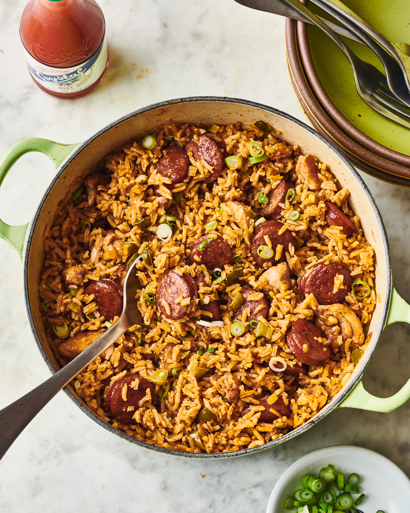

jamabalaya-rice

Description
A southern classic, jambalaya rice is easy to make if using store bought package and even easier to eat if using natural orifices
It can be made easily using a few pots and pans and results in a dish that is to die for
Ingredients
- 57.6gm rice/day (jambalaya rice mix)
- 1 1/2 tablespoons of butter
- 226gm chicken breast/day
- 44.8gm black beans/day
- salt
- pepper
- olive oil
Steps
- bring 2 cups water to boil
- Preheat oven to 450F
- add butter and rice mix and bring to boil
- Boil for 30 seconds, then simmer for 25min
- Season chicken w/salt and pepper
- Bake in oven for 20min, or until internal temp is at least 165F
- Add beans to rice and mix
- Let sit